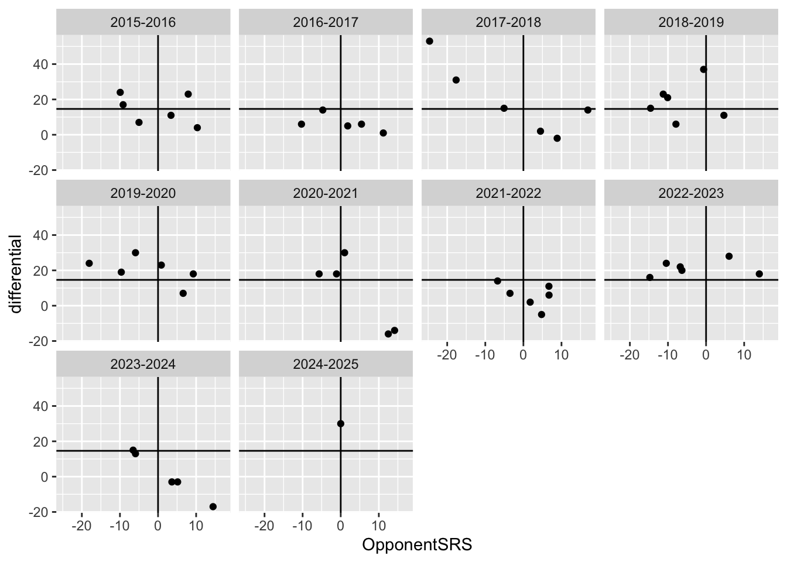
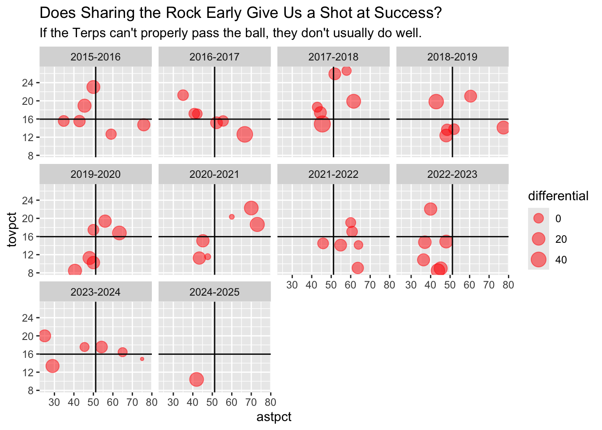

Are We Gonna Be Good? Looking Into Maryland Men’s Basketball Early Data
basketball
Maryland
Author
Sam Benning
Published
November 8, 2024
After a great first win for the team, it’s still extremely tough for us to figure out how well our Maryland men’s basketball team is doing early on in the season. In this blog, we will look into some potential statistics that help us figure out if our team looks good early on, given a limited number of observations. We will use all college basketball game data from 2015 to today.
Code
library(tidyverse)
── Attaching core tidyverse packages ──────────────────────── tidyverse 2.0.0 ──
✔ dplyr 1.1.4 ✔ readr 2.1.5
✔ forcats 1.0.0 ✔ stringr 1.5.1
✔ ggplot2 3.5.1 ✔ tibble 3.2.1
✔ lubridate 1.9.3 ✔ tidyr 1.3.1
✔ purrr 1.0.2
── Conflicts ────────────────────────────────────────── tidyverse_conflicts() ──
✖ dplyr::filter() masks stats::filter()
✖ dplyr::lag() masks stats::lag()
ℹ Use the conflicted package (<http://conflicted.r-lib.org/>) to force all conflicts to become errors
When eyeballing the data and using my logic, I decided to use the first 6 games of each season as our definition of “early season,” or the range where we don’t really feel confident in how well a team is doing, especially since Maryland is usually playing some poor opponents during this time. In this land of uncertainty, we want to find something that we can use to see how well the team is actually doing.
I will add differential as a variable because that’s a pretty good measure of how well we are doing. We’re usually expected to win these early season games.
To compare how we’ve done, we can use a measure of a statistic that basketballreference gives us, called Opponent SRS (Simple Rating System). It essentially rates a team’s overall ranking based upon their season-long point differential and their strength of schedule. 0 is an average overall team. It accounts for if Maryland was playing good or bad teams early on in their season.
Warning: Removed 3 rows containing missing values or values outside the scale range
(`geom_point()`).

The main quadrant of success is the top left - blowing out teams that suck (by >14 points). The bottom left is bad - not doing great against bad teams. The top right is immensely good, but that is clearly more rare for us - beating good teams by a lot. The worst place to be is the bottom left, which I think we are found in a little bit more than we should be…we seem to not blow out a decent number of worse teams.
But, this is only good in hindsight. It needs full season data to properly show. The more games a team plays, the more accurate their SRS is.
Instead, I believe that we can use other statistics to determine how well we are playing. As valuable as scoring and other statistics are, I think they shouldn’t be the first things we look to as teams get their footing. I want to see if teams are disciplined and stick together. Hence, limiting turnovers and getting assists are the things that I’d look at in a team.
I want to see what percentage of a team’s baskets are assists as a ratio, and then will use the turnover percentage stat which essentially measures how many turnovers a team has per 100 possessions.
Now we can analyze how disciplined we are as a team and how cohesive our units are. This will be visualized through a bubble chart.
Code
#just so we can organize the bubble chart into quadrants (these numbers will be the dividers)mdearly |>summarize(avgast =mean(astpct),avgtov =mean(tovpct))
avgast avgtov
1 51.19652 15.96991
Code
ggplot() +geom_point(data=mdearly, aes(x=astpct, y=tovpct, size=differential), color="red", alpha=.5) +geom_hline(yintercept =15.96991) +geom_vline(xintercept =51.19652) +labs(title ="Does Sharing the Rock Early Give Us a Shot at Success?", subtitle ="If the Terps can't properly pass the ball, they don't usually do well.") +facet_wrap(~Season)

We again can see four quadrants divided by the average assist percentage ans average turnover percentage. In this plot, the bottom right is good, with high assist pct and low turnover pct. I added in the bubbles just to show how well our team was playing given these stats. It’s important to note that we have plenty of games where our team was turning the ball over or not sharing the ball and we still had big wins (big bubbles), but, as I mentioned, these are mostly mediocre teams that we are playing during these first few games. We’re expected to win. I would want at least one of these statistics to be better than average to feel good about our squad’s ability to play. Looking at our sub-20 win seasons (2017/18, 2020/21, 2021/22, 2023/24), I see at least some inconsistency in our ability to share the rock and not turn it over. Or, when we do share the rock, we also turn it over, too. We are mostly in the extremes of the data for a few games (either high up or far left on the chart). I look at that 2021-22 season as a bit of an outlier, because early on, our team was projected to be solid, but we underperformed for various reasons. I can see why we were ranked early in the season because we clearly were playing pretty disciplined.
Looking further at this data and knowing how well our teams peformed in each regular season, I would say that there is less correlation than I assumed between our regular season winning and these two stats. However, I do believe that there is a reflection that we are not an elite team here. We don’t see our team in that bottom right quadrant a lot, meaning that we haven’t had those ideally-bonded teams. Thus, a reason that I believe we have never been able to make a true run if we make it to the tournament. I think it says something deeper about the culture of Maryland basketball - maybe a few solid players who like to make their success on their own, but not enough people bought into the system to make something greater happen.